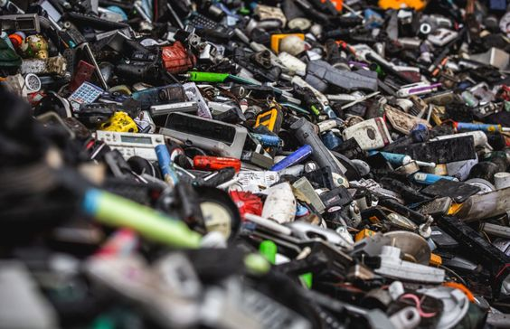
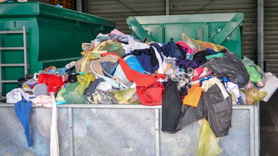
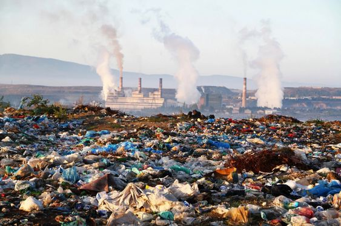
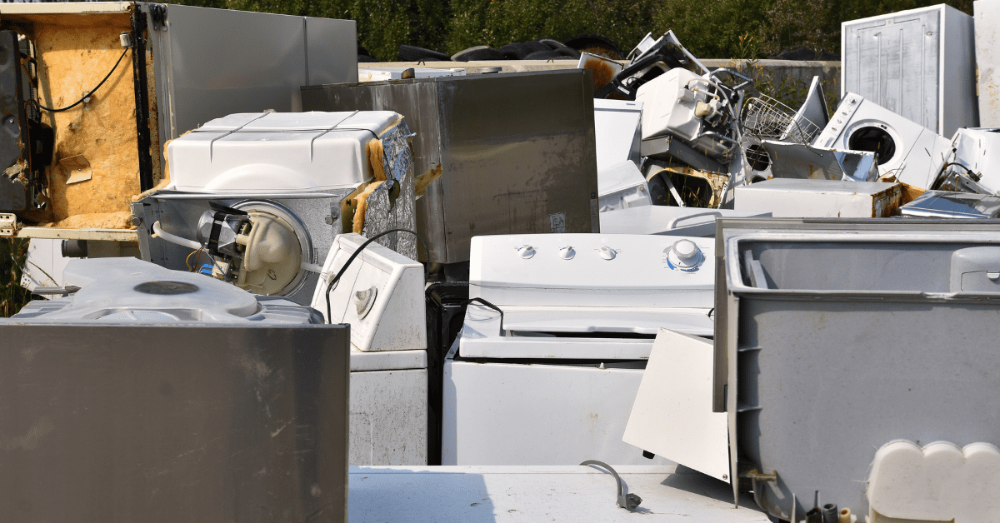
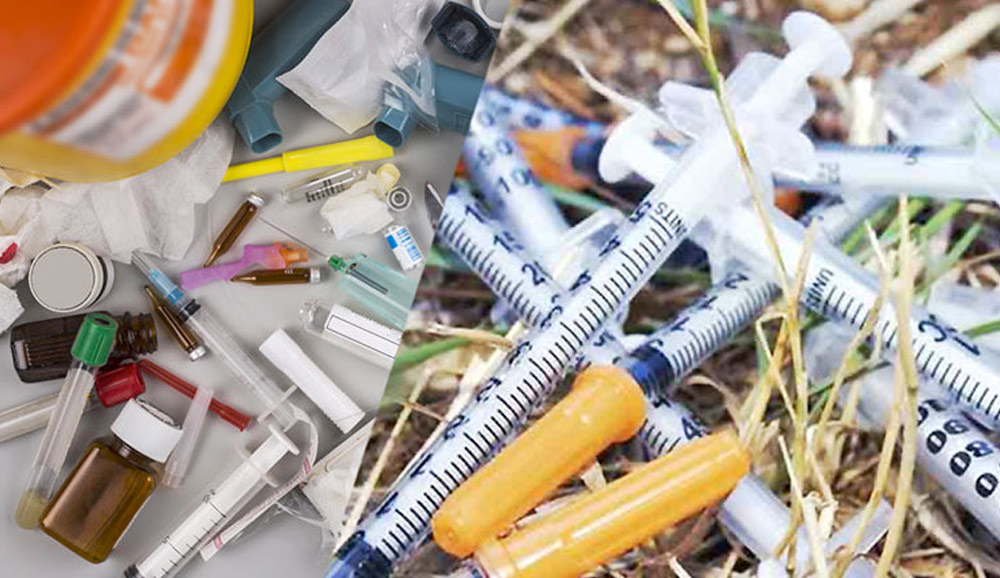
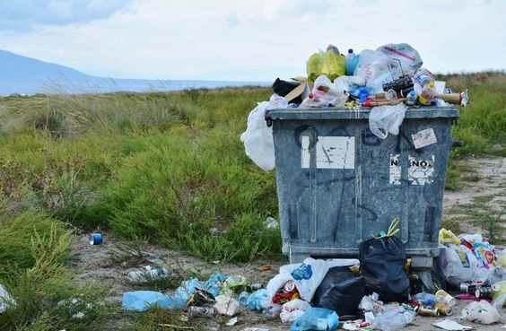

Scrap Symphony Sanctuary
Eco-Clean Waste Management
Overview
Organic Waste
Organic waste consists of biodegradable materials like food scraps, kitchen waste, and plant-based items.
Rich in carbon, it decomposes naturally through composting or other biological processes. Composting, a
widely used method, turns organic waste into nutrient-rich compost for soil improvement. Proper management
of organic waste is essential for reducing landfill volumes and lessening environmental impact.

E-Waste
E-waste refers to discarded electronic devices like computers, phones, and appliances. Due to their toxic
components, proper disposal and recycling are vital to prevent environmental harm and promote resource
reuse. Specialized recycling programs exist in many regions to manage e-waste responsibly.

Textile Waste
Textile waste comprises discarded clothing and fabrics. Rapid turnover in the fashion industry contributes
to its environmental impact. Responsible disposal through recycling and donation is crucial. Support for
sustainable fashion practices helps mitigate textile waste, promoting a more eco-friendly and ethical
approach to fashion.

Hazardous Waste
Hazardous waste consists of materials that pose a threat to human health or the environment due to their
toxicity, flammability, corrosiveness, or other harmful characteristics.Proper disposal is crucial to
prevent contamination and ensure public safety. Stringent regulations & specialized facilities are in
place globally to manage hazardous waste safely.These measures aim to minimize its harmful impact on
ecosystems and communities.

Bulk or Bulky Waste
Bulk or bulky waste comprises oversized household items like furniture and large appliances, unsuitable for
standard waste containers. Special handling is often needed for their proper disposal, with many communities
offering designated pickup or drop-off services. Responsible management of bulky waste is vital to alleviate
pressure on landfills and promote eco-friendly disposal practices.

Bio-Medical Waste
Biomedical waste refers to materials that pose a potential threat to public health and the environment due
to their infectious or hazardous nature.It encompasses items like used needles, syringes, expired medicines,
and contaminated materials from medical procedures.Proper disposal & regulation of bio-medical waste
safeguard public health and the environment, minimizing infection risks for healthcare workers and
communities.

Other Waste
SCRAP SYMPHONY SANCTUARY, your premier destination for trading scrap materials and a platform to donate and
manage waste responsibly. Embrace a circular economy, contribute to charitable causes by donating reusable
items, and explore green solutions with our community of startups and entrepreneurs for a sustainable
future.


Pages
Home
About us
overview
Schedule pickup
Contact us


Terms & condition || Privacy Policy
© SCRAP SYMPHONY SANCTUARY. All Rights Reserved.